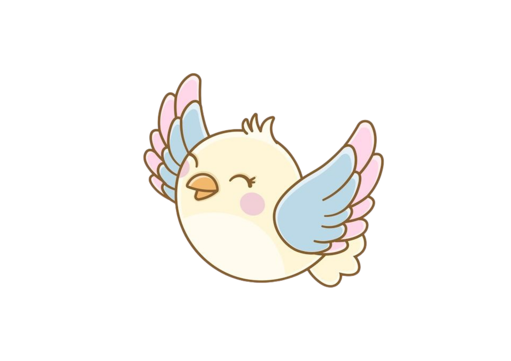
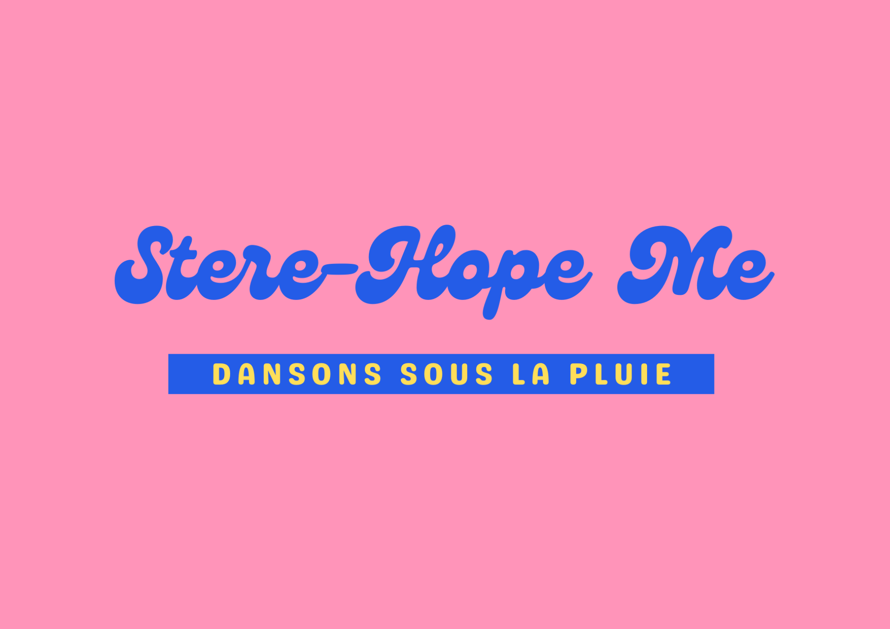

Savoir danser sous la pluie
Les stéréotypes, les jugements et les remarques blessantes peuvent parfois faire perdre confiance en soi. Stere-Hop Me est une plateforme qui aide chacun à reprendre confiance grâce à la musique, au partage et au soutien d'une communauté bienveillante.
Parce que les mots peuvent blesser, mais ils ne définissent pas qui nous sommes.
Transforme les mots qui blessent en force grâce à la musique
Notre mission
Chez Stere-Hop Me, nous croyons que personne ne devrait se sentir limité par les préjugés des autres. Notre objectif est de créer un espace où chacun peut : partager son histoire librement ; être écouté et soutenu ; transformer une expérience négative en source de motivation ; retrouver confiance en soi grâce à la musique.
Comment fonctionne Stere-Hop Me ?
Exprime ce que tu ressens
Une remarque, un jugement ou un stéréotype t’a marqué ? Partage ton expérience en toute sécurité, anonymement ou non.
Transforme tes émotions en musique
Grâce à notre intelligence artificielle, Stere-Hop Me analyse ton ressenti et te propose des musiques adaptées à ton histoire et à tes goûts.
Reçois du soutien
Découvre les témoignages d'autres personnes, partage des chansons qui t'ont aidé et construis une communauté où chacun peut s'encourager.
Nos 3 valeurs
La musique
La musique est un moyen d’exprimer ses émotions, de se sentir compris et de retrouver de la motivation.
La communauté
Parce qu’on est plus fort ensemble, chacun peut partager son vécu et apporter du soutien aux autres.
La liberté de s’exprimer
Avec un profil anonyme, chacun peut raconter son histoire sans peur du jugement.